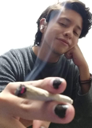

Diego Eduardo Renteria Barreto


Mi nombre es Diego, nací y toda mi vida he vivido en Colima, nací el día 10 de mayo del año 2001. Inicié mi educación preescolar y primaria en el instituto Manuel c. Silva, un colegio que al día de hoy se encuentra demolido, me transfirieron a la escuela Alejandro Flores Garibay cuando estaba en segundo de primaria, ahí concluí mi educación primaria. La secundaria la terminé en la Sec. Enrique Corona Morfin T.V, luego el bachillerato lo concluí en el bachillerato No. 2 de la universidad de Colima, ahí es donde me di cuenta que quería entrar a esta facultad, mis hobbies en general son jugar videojuegos, salir a caminar, escuchar música y ver series con mi pareja.